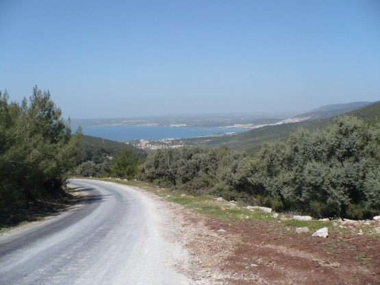
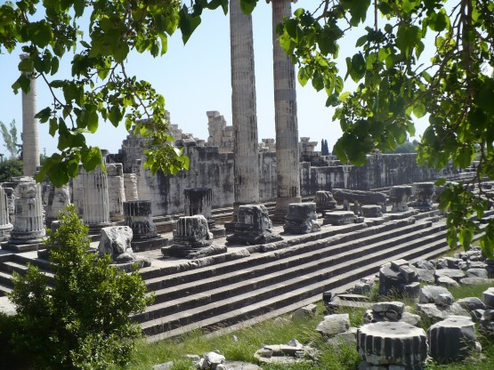
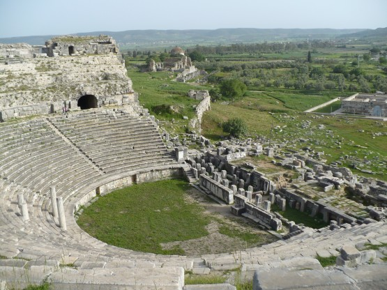
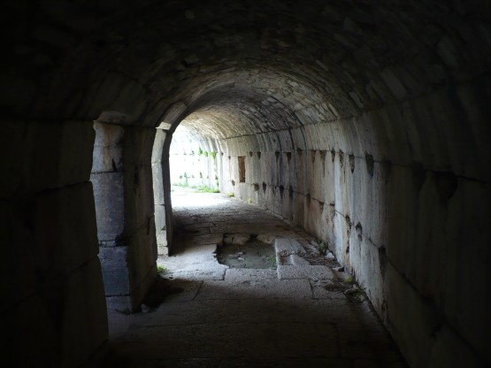

19 апреля
Тихими второстепенными асфальтовыми дорожками качу вдоль моря. Солнечно и не жарко примерно 25 градусов. За каждым поворотом новый вид.
Вид на море.

Опять начинается туристические места. Дидима. Толпы туристов. Кстати, интересно, что в апреле русских туристов там не видно совсем. Английская, немецкая речь. Неожиданно заметил, что проговариваю слова, про себя по-английски, подбираю, строю предложения, к чему бы это?
Храм Аполлона в Дидиме.

День выдался богатым на достопримечательности. Следующая остановка Милет и его амфитеатр. Пожалуй это лучший из амфитеатров, которые я там увидел.
Амфитеатр в Милеете:

Побродил по внутренним коридорам этого огромного сооружения.

Пора в путь, еду по широкой долине реки Мендерес, которая раньше была дном моря. Нынче это место малопримечательное, кругом сельскохозяйственные поля, орошение и комары. Самое главное, что палатку поставить негде. Темнеет. Решаю ехать вдоль моря до упора пока не найду место. Тут как назло попадается указатель на некую достопримечательность без указания количества километров, еду, через 5 км поворачиваю обратно к морю. Стемнело. Места для палатки нет напрочь, то поле то камыши, то заборы.
Кстати, заборы в Турции любят, пожалуй, еще больше чем у нас. Вижу у дороги рыбный ресторан, прилично одетые люди, беседуют за бокалом вина. Кушаю свежезажаренную на углях рыбу аж за 15 лир -).
Видя, как медленно и неохотно я собираюсь продолжить свои поиски стоянки, хозяин кафе предлагает на выбор 2 варианта: поставить палатку у него в саду под деревом, либо переночевать на зимней террасе его кафе, и то и другое бесплатно. Выбираю террасу.
Очень хочется спать, за день проехал 96км, похоже, начинаю уставать.